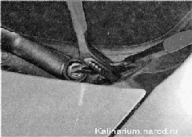

Очиститель ветрового стекла - снятие и установкаНа автомобиле установлены очистители и омыватели ветрового и заднего стекол. Очиститель ветрового стекла состоит из мотор-редуктора с тягами и двух рычагов со щетками. Напряжение питания подается на электродвигатель мотор-редуктора через дополнительное реле при включении зажигания. Для защиты мотор-редуктора от перегрузок в его внутреннюю цепь встроен биметаллический предохранитель. Для подачи омывающей жидкости на ветровое стекло на капоте установлены две форсунки омывателя. Жидкость подводится к ним электронасосом по эластичной трубке из бачка стеклоомывателей, закрепленного на правом брызговике в моторном отсеке. Насос установлен на стенке бачка. Стеклоочиститель заднего стекла установлен на двери багажного отделения и состоит из мотор-редуктора и рычага со щеткой. Для подачи омывающей жидкости на заднее стекло в верхней части двери багажного отделения установлена форсунка. Жидкость к форсунке подается по эластичной трубке вторым электронасосом, установленным в бачок стеклоомывателей. В бачок стеклоомывателей в зимний период необходимо заливать специальную незамерзающую жидкость. Снятие 1. Подготавливаем автомобиль к выполнению работы и отсоединяем клемму от отрицательного вывода аккумуляторной батареи. 2. Поддев отверткой, снимаем заглушку с рычага стеклоочистителя. 3. Торцовым ключом на 13 мм отворачиваем гайку крепления рычага стеклоочистителя и снимаем рычаг. Совет Если рычаг сидит на шлицах вала плотно, то, чтобы не погнуть вал, наживите гайку на резьбу, и раздвижными пассатижами спрессуйте рычаг с вала. 4. Аналогично снимаем второй рычаг стеклоочистителя. 5. Снимаем решетку воздухопритока. 6. Освобождаем держатель соединительной колодки мотор-редуктора стеклоочистителя. 7. Отсоединяем колодку жгута проводов стеклоочистителя от бортовой сети автомобиля. 8. Торцовым ключом на 10 мм отворачиваем два болта 1 и гайку 2 крепления стеклоочистителя. 9. Аккуратно извлекаем стеклоочиститель из короба воздухопритока. Установка Устанавливаем стеклоочиститель в обратной последовательности. Если стеклоочиститель новый или после ремонта, рычаги следует устанавливать в последнюю очередь. Перед установкой рычагов подключите стеклоочиститель к бортовой сети автомобиля и включите прерывистый режим работы. Как только стеклоочиститель отработает полный цикл и остановится, выключите его. И уже после этого установите рычаги в нижнем положении стекла. Если не удается установить рычаги так, чтобы стеклоочиститель работал правильно, следует переставить кривошип на валу мотор-редуктора (см. ниже, «Очиститель ветрового стекла — замена мотор-редуктора». |